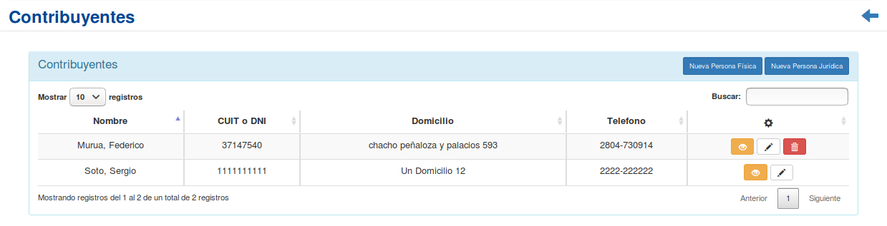
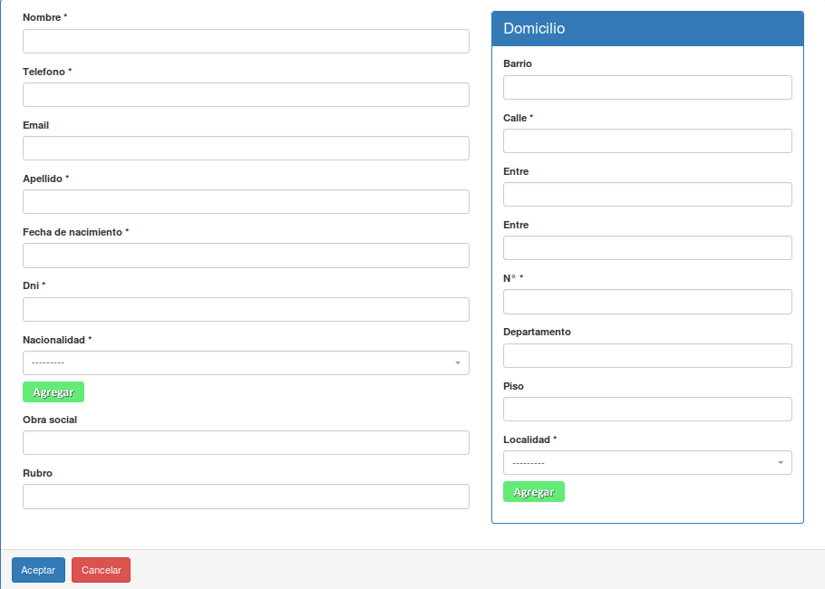
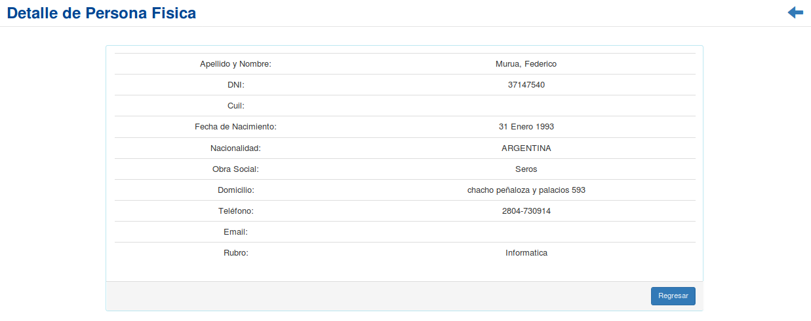
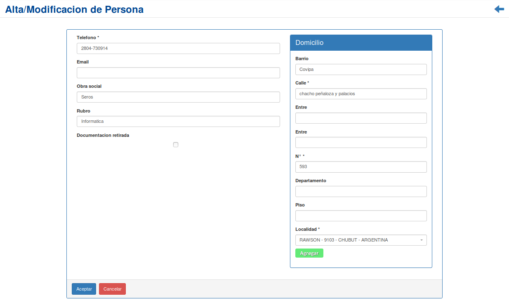
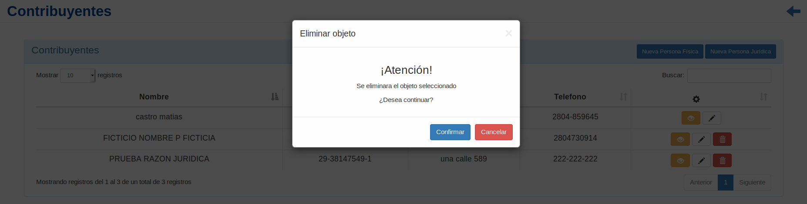

Contribuyentes¶
Se presentará una pantalla que contendrá un listado con todos los Contribuyentes que se encuentren registrados en el sistema hasta la fecha.
Junto con el listado, se presentarán un conjunto de funcionalidades que permitirán manipular cada Contribuyente.
Estas funcionalidades son:
Además, si el usuario desea Registrar un nuevo Contribuyente:
Nueva Persona Física¶
Si el usuario desea crear una nueva Persona Física, deberá presionar el botón
Nueva Persona Física.A continuación, el sistema lo redirigirá a la siguiente pantalla. En esta parte, al usuario se le presentará un formulario y deberá ingresar los datos solicitados para dar de alta una nueva Persona Física.
Atención
Se puede observar un botón verde con la leyenda
Agregaren el campo Nacionalidad, así como en la sección domicilio en el campo Localidad, el cual es utilizado para agregar una nueva nacionalidad o localidad respectivamente si no se encuentran registradas en el sistema. Además; El sistema siempre validará que la información ingresada sea correcta. En caso de que los datos ingresados sean incorrectos el sistema lo informará. En este punto, las posibles causas de errores son:
- Uno o más campos obligatorios vacíos.
- Uno o más campos con un formato incorrecto.
Una vez completado el formulario, se volverá a la pantalla que contendrá el listado de contribuyentes.
Nueva Persona Jurídica¶
Si el usuario desea crear una nueva Persona Jurídica, deberá presionar el botón
Nueva Persona Jurídica.A continuación el sistema lo redirigirá a una pantalla, similar al registro de una nueva persona física. En esta parte el usuario se le presentará un formulario y deberá ingresar los datos solicitados para dar de alta una nueva Persona Jurídica. Una vez completado el formulario, se volverá a la pantalla que contendrá el listado de contribuyentes.
Detalle de Contribuyente¶
Si el usuario desea ver el detalle de un Contribuyente, deberá seleccionar en la columna de acciones asociado al Contribuyente y presionar el ícono
Detalle.Una vez realizado el paso anterior aparecerá la siguiente vista emergente:
En esta parte el usuario podrá observar la información adicional del Contribuyente. Si desea volver al listado inicial, presionará el botón
Regresar.Se puede observar, en caso que sea una persona física, 3 (tres) pestañas las cuales informan los datos personales, la información asociada a los cursos y libretas que tiene el contribuyente y la información sobre sus mascotas.
Por otro lado, en caso de ser una persona jurídica, solo se mostrará los datos adicionales respectivos de la empresa.
Modificar Contribuyente¶
Si el usuario desea modificar los datos de un Contribuyente, deberá seleccionar en la columna de acciones asociado al Contribuyente y presionar el ícono
Modificar.Una vez realizado el paso anterior, el sistema lo redirigirá a la siguiente pantalla:
En esta parte al usuario se le presentará un formulario y deberá actualizar los datos asociados al Contribuyente.
Atención
Se puede observar al igual que en la sección Nueva Persona Física, un botón verde con la leyenda
Agregaren el campo Localidad, en el formulario del domicilio, el cual es utilizado para agregar una nueva localidad si no se encuentran registrada en el sistema. Además; El sistema recopilará los datos registrados del contribuyente y los mostrará para modificarlos, además, siempre validará que la información ingresada sea correcta. En caso de que los datos ingresados sean incorrectos el sistema lo informará. En este punto, las posibles causas de errores son:
- Uno o más campos obligatorios vacíos.
- Uno o más campos con un formato incorrecto.
Una vez completado el formulario, el usuario deberá presionar el botón
Aceptary el sistema se encargará de actualizar los datos del Contribuyente seleccionado.
Eliminar Contribuyente¶
Si el usuario desea eliminar un Contribuyente, deberá seleccionar en la columna de acciones asociado al Contribuyente y presionar el ícono
EliminarUna vez realizado el paso anterior aparecerá la siguiente ventana emergente (modal):
En esta parte el usuario deberá decidir si confirma la eliminación del Contribuyente o no. Si desea confirmar la eliminación deberá presionar el botón
Confirmar, caso contrario, presionará el botónCancelar.